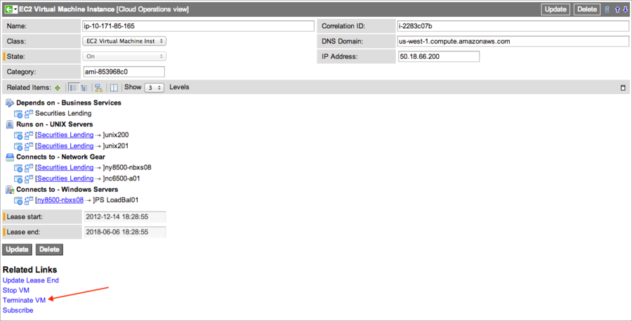
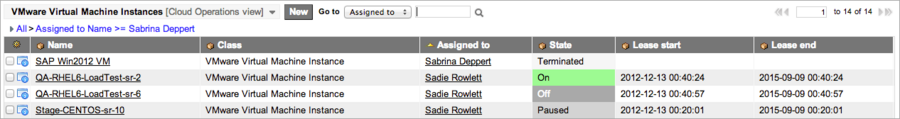

Managing Virtual Assets in Cloud Provisioning
Contents
1 Overview
Use the virtual assets portals to view the history of your virtualization requests and the status of all virtual machines requested by all members of your team. View the virtual machines you ordered in the My Virtual Assets portal. Users with the cloud_operator role can see the virtual servers they administer in the Cloud Operations portal. Open the records for virtual resources directly from the portals to change instance specifications (CPU count, memory, or disk size) or the state of the virtual machine. ServiceNow notifies users about the status of their requested changes.
You can make these changes to your virtual servers:
- Modify specifications
- Update the lease
- Start
- Stop
- Pause
- Cancel
- Terminate
- Take a snapshot
- Restore from a snapshot
- Delete a snapshot
For all actions that are subject to change control, if change control is enabled, the action is added to change request page. After the change request is approved, the user must return to the virtual asset page to click link Proceed with Change under Related Lists.
2 Updating a Virtual Machine
To make a change to an existing virtual machine, select an action from a context menu or use the Related Links in the virtual machine record.
- Context menu: The list view displays all the virtual servers you or your teams requested through the service catalog and includes virtual machines from VMware and Amazon EC2. Machines in all states appear on the list, including those that are terminated or have been deleted. The state of the virtual machines is shown in the list, as are the Lease start and Lease end times for each virtual machine. List editing is not enabled for lease times. To initiate a change from the list of virtual machines, right-click on an instance and select VM Management from the context menu. Only those actions that are appropriate for the State of the virtual machine are available.
{kind=link}
- Related Links: Open the virtual machine instance record and select an action from the Related Links. The controls that appear are dependent on the State of the virtual machine.
{kind=link}
2.1 Modifying the Specifications of a Virtual Machine
You can upgrade these specifications of a VMware virtual machine. You cannot downgrade a virtual machine.
- CPU count
- Memory
- Disk space
| |
Note: This feature is not available for Amazon EC2 instances. |
- Navigate to Self-Service > My Virtual Assets to see the virtual machines you ordered.
- Select a VMware virtual machine in one of these states:
- On
- Off
- Paused
- Scheduled
- Under Related Links, click Modify VM.
- A dialog box appears, allowing you to upgrade the specifications of this virtual machine. If this action is subject to change control, the dialog box advises you that this is required and asks if you want to proceed.
- If you select additional disk space, the platform adjusts the number of disks as follows:
- If the virtual machine is Off, ServiceNow adds an additional disk of the size requested.
- If the virtual machine is Scheduled, ServiceNow replaces a data disk that was added in the original request. If no additional disk was requested during provisioning, ServiceNow adds a new disk.
- Select new values for the CPU count, memory, or disk space, and then click OK.
- A change request and an approval task can be required for a modification. When both have been approved, the requestor is notified and invited to confirm the modifications in the VMware Virtual Machine Instance form. If change control is not configured, the upgrade to the virtual machine occurs automatically when the approval task is complete. When change control is configured, the requestor's manual confirmation of the change triggers the upgrade. ServiceNow then stops the virtual machine, performs the requested upgrade, and restarts the machine.
{kind=link}
{kind=link}
2.2 Updating the Lease
You can modify the lease end date for a running virtual machine. To set the lease default duration and maximum duration, see Configure the Lease Duration.
To update the lease end date for one virtual machine:
- Open the virtual machine instance record.
- Under Related Links, click Update Lease End.
- A dialog box appears, allowing you to specify a new lease end time.
- Edit the date and time field and click OK.
- A warning appears if you select a lease end date that is outside the configured maximum duration. If the virtual machine does not have a configured lease duration, the system sets a new start time, using the current day, and a lease end date at the configured default lease duration. A dialog box appears allowing you to select a new lease end date. If this action is subject to change control, the dialog box advises you that this is required and asks if you want to proceed.
- Enter a new lease end date, and then click OK to create a change request for this modification.
{kind=link}
2.3 State Changes
The services portal for virtual servers enables an administrator to change machine states, if the changes are permitted by the virtual machine providers. This table lists possible states for virtual machines and the change controls that are available for each state:
| State | Controls |
|---|---|
| On |
|
| Off |
|
| Paused |
|
| Scheduled |
|
| Starting | No changes are permitted when a virtual machine is in transition between states |
| Stopping | No changes are permitted when a virtual machine is in transition between states |
| Terminated | No state changes are possible |
| Error |
|
| Cancelled | No state changes are possible |
| Pausing | No changes are permitted when a virtual machine is in transition between states |
| Terminating | No changes are permitted when a virtual machine is in transition between states |
2.3.1 Starting or Stopping a Virtual Machine
To start or stop a VMware or EC2 virtual machine, click the appropriate Related Link. These restrictions apply:
- The provisioning service must support the feature. For Amazon EC2, only Elastic Block Store (EBS) volumes can be started and stopped from the virtual machine portal.
- Only a virtual machine that was successfully provisioned can be started or stopped.
- The link that appears is dependent on the state of the virtual machine (On/Stop or Off/Start).
If this action is subject to change control, a pop-up window advises you that this is required and asks if you want to proceed.
{kind=link}
| |
Note: Details for a VMware virtual machine are different from those displayed for an EC2 instance. Hardware details for a VMware virtual machine, such as memory and CPU count, are only displayed in records if Discovery ran successfully against the configuration item (CI). |
{kind=link}
ServiceNow runs the VMware Start-Stop workflow to provision the request.
{kind=link}
2.3.2 Pausing a Virtual Machine
To pause a VMware virtual machine from the virtual services portal:
- Navigate to Self-Service > My Virtual Assets to see the virtual machines you ordered.
- Select a virtual machine in the On state.
- You cannot pause a virtual machine in a transitional state.
- Under Related Links, click Pause VM.
- If this action is subject to change control, a pop-up window advises you that this is required and asks if you want to proceed.
- The list of your virtual machines appears. The machine you paused shows the transitional state of Pausing.
{kind=link}
{kind=link}
2.3.3 Cancelling a Virtual Machine
To cancel a scheduled EC2 or VMware virtual machine from the virtual services portal:
- Navigate to Self-Service > My Virtual Assets to see the virtual machines you ordered.
- Select a virtual machine in the Scheduled state to cancel.
- You can only cancel a virtual machine after it has been scheduled and before it is provisioned.
- Under Related Links, click Cancel VM.
{kind=link}
2.3.4 Terminating a Virtual Machine
| |
Note: Termination deletes the resource and all associated data. You cannot recover a resource after terminating it. Be sure to capture all needed data before terminating. |
To terminate an EC2 or VMware virtual machine from the virtual services portal:
- Navigate to Self-Service > My Virtual Assets to see the virtual machines you ordered.
- Select a virtual machine to terminate.
- You can terminate virtual machines in these states:
- On
- Off
- Error
- Paused
- Note: You cannot terminate a virtual machine in a transitional state (stopping, pausing, and so on).
- You can terminate virtual machines in these states:
- Under Related Links, click Terminate VM.
- If this action is subject to change control, a pop-up window advises you that change control is required and asks if you want to proceed.
- This is an example of an Amazon EC2 virtual machine to terminate.
- 
- This is an example of a VMware virtual machine to terminate.
- The State changes to Stopping if the virtual machine is running. In the list view of virtual machines, the status shows Terminated when the VM is stopped. The asset is marked Retired in Asset Management.
- 
{kind=link}
{kind=link}
{kind=link}
2.3.5 Deleting a Virtual Machine
Users with the cloud_operator role (the Virtual Provisioning Cloud Operators group) can delete a virtual machine configuration item (CI) that is in an Error state and has a missing correlation ID. This is considered an unrecoverable state, and the CI should be deleted.
- Navigate to Cloud Provisioning > Management > Cloud Operations Portal.
- In the Virtual Assets that I manage gauge, select a virtual resource that shows a State of Error.
- Click Delete in the VMware Virtual Machine Instance record.
- The platform does not permit users with the cloud_operator role to delete CIs in any other state, including a virtual machine in an Error state with a correlation ID.
2.4 Managing Snapshots
Users with the cloud_operator role (the Virtual Provisioning Cloud Operators group) can take snapshots of a VM and later restore the VM from a specific snapshot. Snapshots are available starting with the Eureka release.
2.4.1 Taking a Snapshot
To take a snapshot of a virtual machine:
- Navigate to Cloud Provisioning > Management > Cloud Operations Portal.
- In the Virtual Assets that I manage gauge, select a virtual resource.
- Under Related Links, click Take Snapshot.
- A dialog box appears, allowing you to define a snapshot. If change control is enabled for snapshot, an indication is included in the dialog box.
- Edit the name and description fields and click OK.
- If change control is enabled, and the action is approved, you must return to this page and click Proceed with Change.
- A new Take Snapshot link is added on the VMware instance form under Related Links. If the snapshot limit is reached, the link is unavailable. If a cloud user deletes the stored snapshots so that the total is below the limit, or an administrator increases the snapshot limit, the link reappears in the form.
2.4.2 Restoring from a Snapshot
To restore a VM instance from a snapshot:
- Navigate to Cloud Provisioning > Management > Cloud Operations Portal.
- Open the VM instance to restore.
- In the Virtual Assets that I manage gauge, select a virtual resource.
- Right-click the snapshot and select Restore snapshot. The VM is reverted to the state captured in the selected snapshot.
2.4.3 Deleting a Snapshot
To delete a snapshot:
- Navigate to Cloud Provisioning > Management > Cloud Operations Portal.
- In the Virtual Assets that I manage gauge, select a virtual resource.
- Under Related Links, click Delete a Snapshot.
- A dialog box appears, listing the current snapshots. If change control is enabled for snapshot, an indication is included in the dialog box.
- Select the snapshot to delete and click OK.
- If change control is not enabled, the snapshot is immediately deleted. If change control is enabled, the snapshot is deleted after it is approved.
2.4.4 Configuring Snapshots
Users with the cloud_admin role can configure snapshots by applying conditions to specific VM tables.
- Navigate to Cloud Provisioning > Management > Snapshot Configurations.
- Click New.
- Fill in the fields as shown in the table and then click Submit.
| Field | Description |
|---|---|
| Active | Activates (selected) or deactivates (cleared) the configuration. |
| Table | Specifies the VMs that are subject to this configuration. |
| Limit | Maximum number of snapshots that are saved for VMs that meet the specified conditions.
|
| Condition | Defines the VMs that are subject to this configuration in addition to the those in the specified table. Use the condition builder to further limit the VMs. |
{kind=link}
2.5 Notifications
The ServiceNow platform notifies users of status changes to their virtual resources and acknowledges requests for additional resources. Notifications can contain specifics of the action taken, the date, and any modifications made. Included is a link to the request or to the CI record for the virtual machine. For each success message, there is a corresponding failure message.
The system sends emails to requestors and asset owners automatically when a virtual resource is:
- Requested: The user requests a virtual server. This notification states: Request <number> has been opened on your behalf.
- Approved: The user's request for a virtual server is approved. This notification states: Your request <number> has been approved.
- Rejected: The user's request for a virtual server was not approved. This notification states: Your requested item <number> for VMware Instance has been rejected.
- Scheduled: The requested instance is scheduled for creation. This notification states: VMware instance <name> has been successfully scheduled.
- Provisioned: The user's VMware or Amazon EC2 virtual server was successfully provisioned and is ready for use. This notification states: VMware/Amazon EC2 instance <name> has been successfully provisioned.
- Modified: Applies to VMware only. The user's virtual machine configuration (such as memory allocation or storage capacity) was modified. This notification states: The configuration of VMware instance <name> has been successfully updated.
- Extended: The lease end date for this virtual machine was extended. This notification states: The lease end of virtual instance <name> has been successfully updated.
- About to expire: The lease on the user's virtual machine expires in n days. To configure the default lead time for notification of pending expiration, navigate to Cloud Provisioning > Management > Properties and change the value in the Time prior to lease end to notify requestor property (glide.vm.lease_end_notification). The default lead time in the base system is one day. This notification states: Virtual instance <name> will be terminated in <n> days.
- Terminated: The user's virtual machine lease expired, and the virtual resource was terminated. This notification states: VMware instance <name> has been successfully terminated.